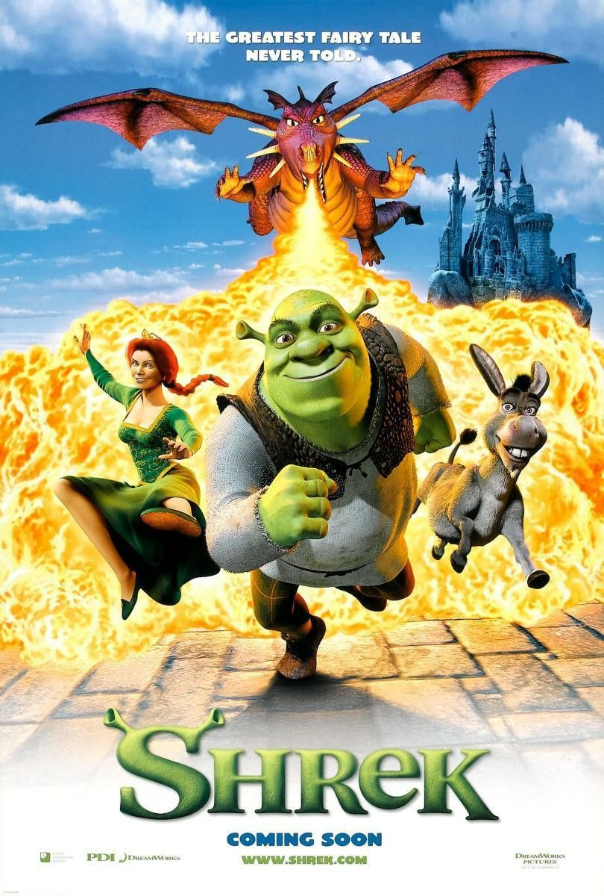
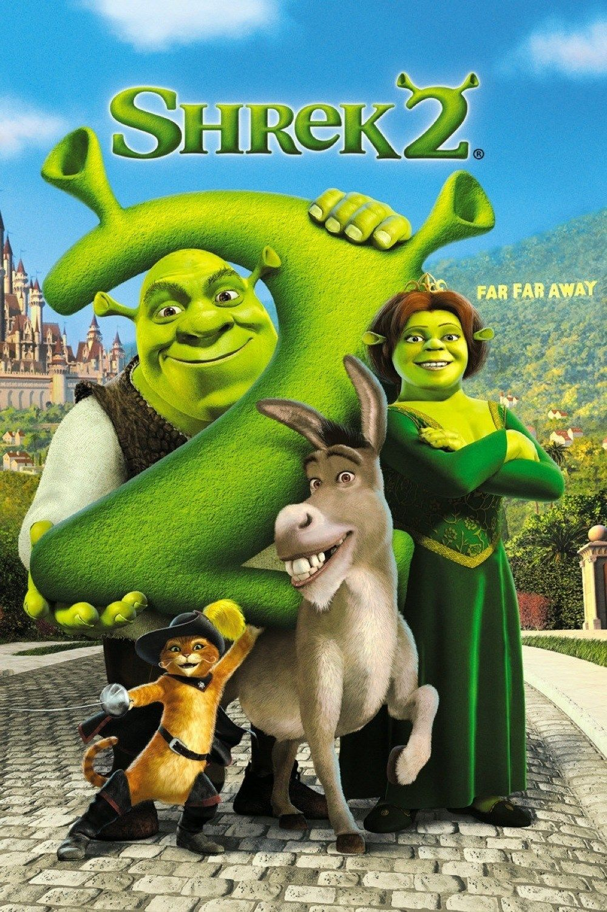
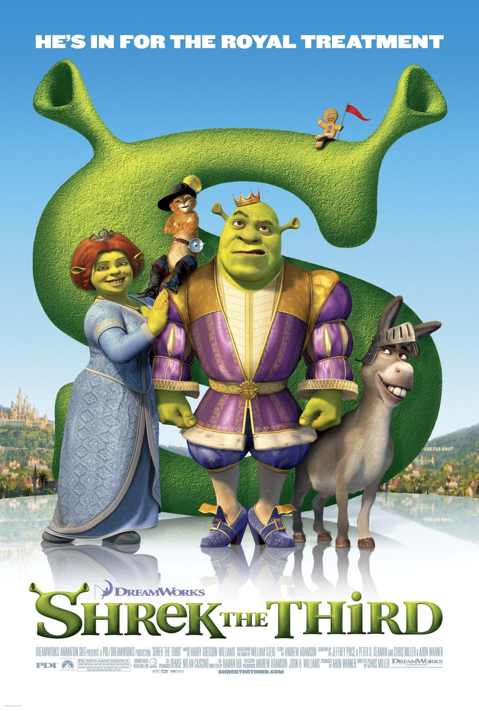
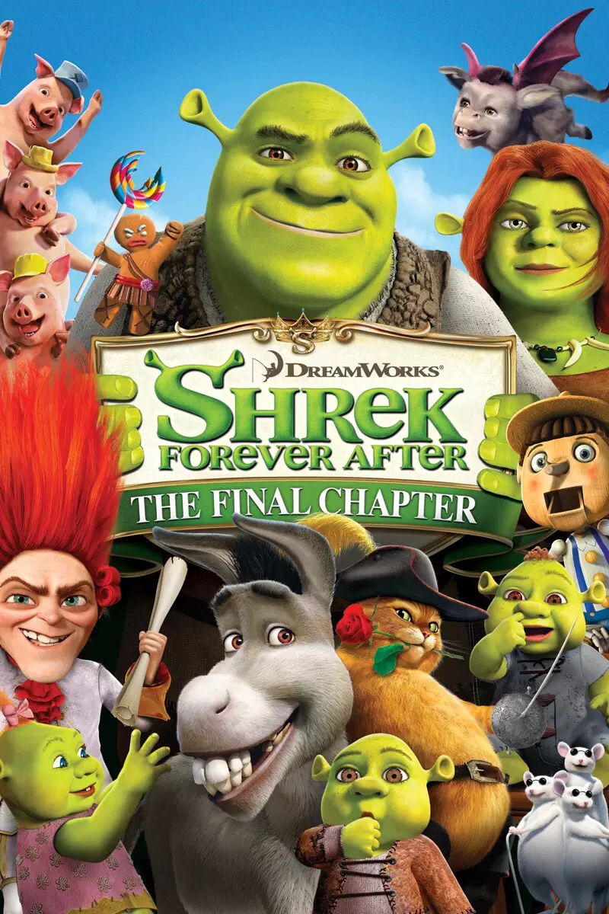

Películas de Shrek

Shrek 1
Shrek es un ogro solitario que vive en su pantano. Su vida cambia cuando debe rescatar a la princesa Fiona y descubre la amistad.

Shrek 2
Shrek conoce a los padres de Fiona y enfrenta nuevos desafíos mientras intenta ser aceptado.

Shrek Tercero
Shrek busca al heredero del reino mientras enfrenta nuevas responsabilidades.

Shrek Para Siempre
Shrek vive una realidad alternativa y lucha por recuperar su vida.